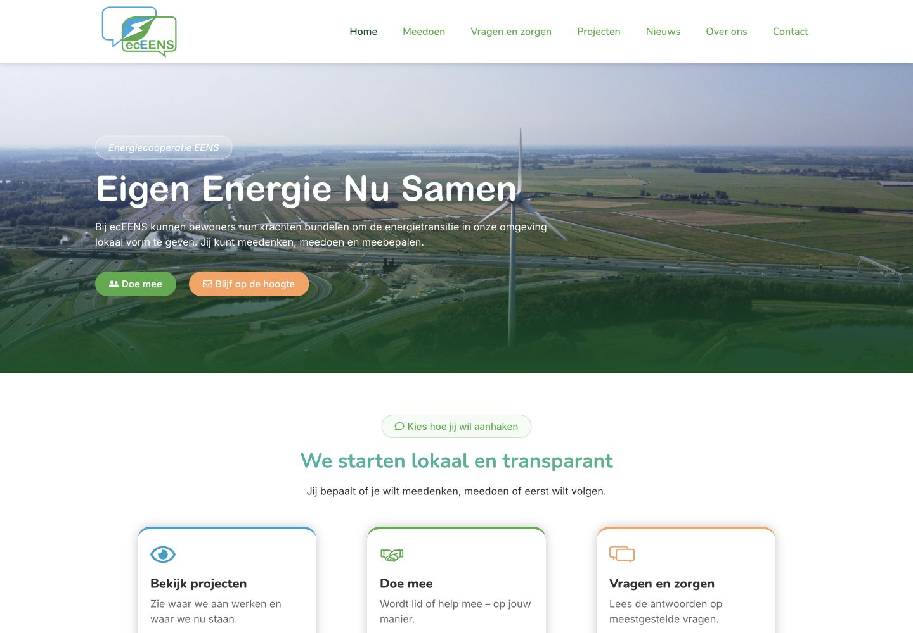
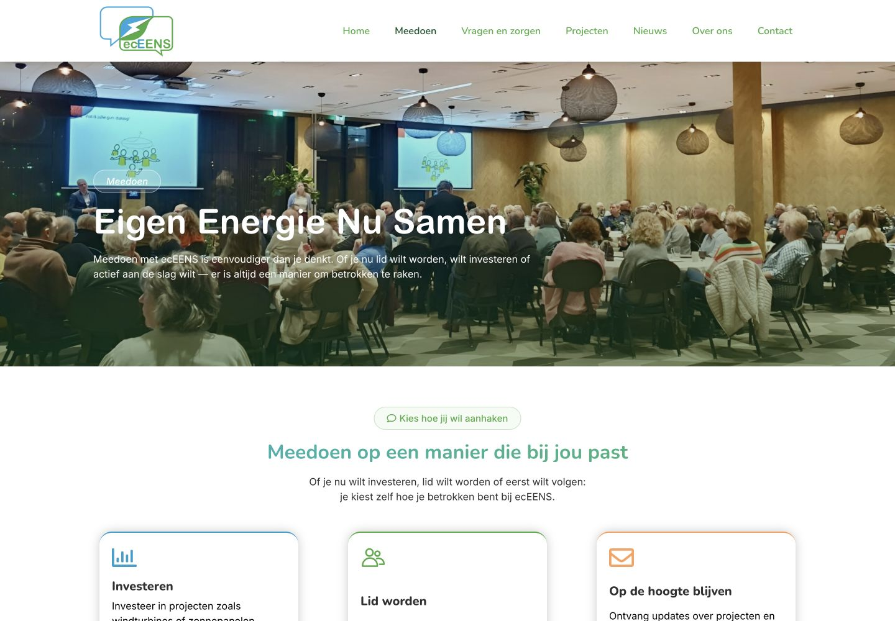
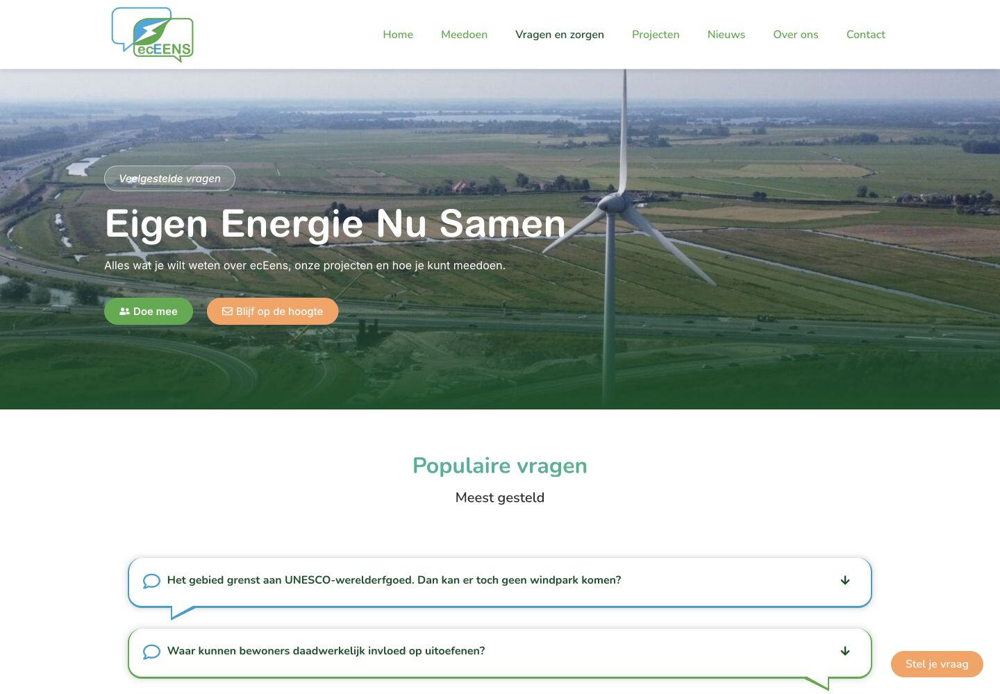

Case
EC EEns
Voor EC EEns ontwikkelde ik een nieuwe website voor een lokale energiecoöperatie in Stichtse Vecht. Het doel: veel informatie, projecten en bewonersverhalen logisch structureren, zodat bewoners sneller vinden wat voor hen relevant is en beheerders de site zelf kunnen bijhouden.



Vraag
Bewoners sneller naar de informatie die voor hen telt.
Bezoekers moeten snel kunnen kiezen wat voor hen relevant is: meedoen met de coöperatie, investeren in lokale energieprojecten of nieuwe ontwikkelingen volgen. Daarom is veel aandacht besteed aan duidelijke routes, rustige vormgeving en laagdrempelige teksten.
Naast de gewone pagina's is een schaalbare structuur ingericht voor projecten, nieuws, bewonersverhalen, artikelen, maatregelen en kennisgroepen. Beheerders kunnen deze onderdelen zelf toevoegen, ordenen en aan elkaar koppelen.
Templates zorgen ervoor dat nieuwe artikelen en verhalen automatisch netjes worden vormgegeven. Zo kan EC EEns zonder technische kennis content plaatsen, terwijl de site overzichtelijk en consistent blijft.
Resultaat
Eenvoudiger beheer en sneller naar relevante informatie
De vaste contentstructuur en templates maken het eenvoudiger om projecten, verhalen en kennis zelf te beheren. De duidelijke bezoekersroutes helpen bewoners sneller bij de informatie die voor hen relevant is.
- Ontwerp en bouw van de WordPress-website.
- Informatiearchitectuur en gebruikersroutes.
- Beheerstructuur voor verschillende soorten content.
- Templates voor artikelen, bewonersverhalen, projecten en kennisgroepen.
- Uitgelichte homepage-content eenvoudig zelf beheren.
- Dynamische overzichtspagina's voor projecten, nieuws en kennis.
- Gebruikersrollen en afgeschermde beheeronderdelen.
- Nieuwsbriefinschrijvingen netjes gekoppeld aan de beheeromgeving.
Herkenbaar?
Moet veel informatie beheersbaar én vindbaar blijven?
Vertel waar je nu tegenaan loopt. Ik denk mee over welke aanpak past bij je website, organisatie en dagelijkse werk.